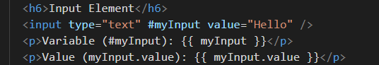
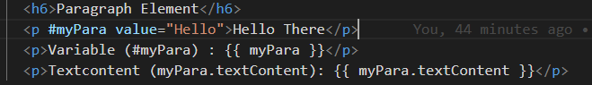
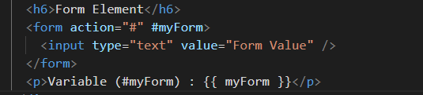

-
Template reference variable is used to create a variable of any DOM
Element like P Tag, Div Tag, Input Element, Form Element and more.
- These Elements then can be accessed anywhere in DOM using TRV.
-
These Elements then can also be accessed anywhere in TS file using TRV and
@ViewChild, @ViewChildren.
Input Element
Variable (#myInput): {{ myInput }}
Value (myInput.value): {{ myInput.value }}

Paragraph Element
Hello There
Variable (#myPara) : {{ myPara }}
Textcontent (myPara.textContent): {{ myPara.textContent }}

Form Element
Variable (#myForm) : {{ myForm }}
